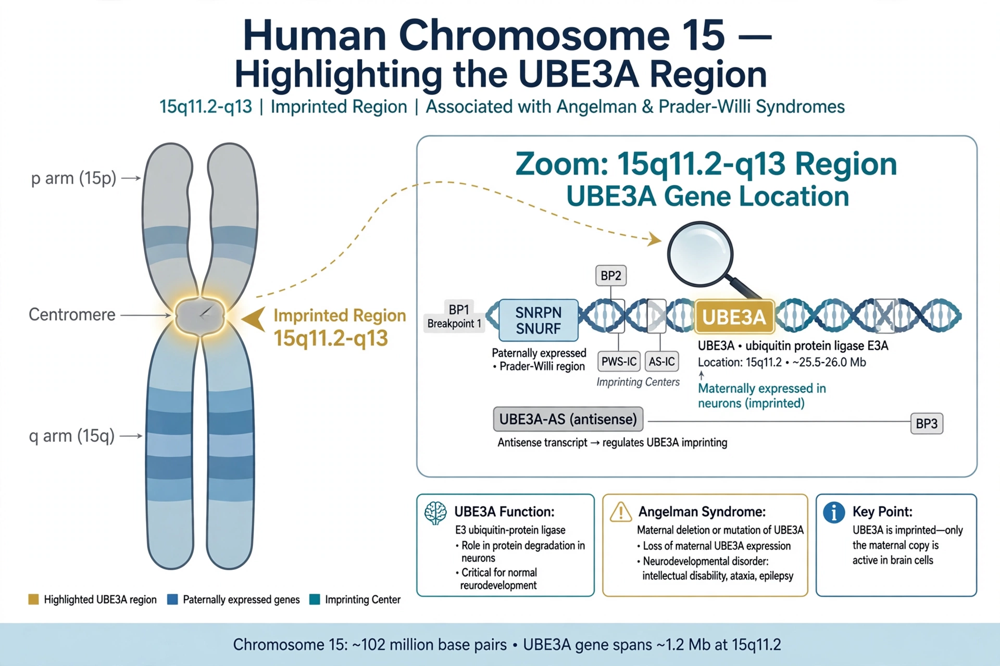

Angelman syndrome (AS) is a genetic disorder that mainly affects the nervous system. Symptoms include a small head and a specific facial appearance, severe intellectual disability, developmental disability, limited to no functional speech, balance and movement problems, seizures, and sleep problems. Children usually have a happy personality and are particularly interested in water.
| Angelman syndrome | |
|---|---|
| Cause | Loss of function of the maternal UBE3A gene on chromosome 15 |
| Frequency | About 1 in 12,000–20,000 births |
| Named after | Harry Angelman |
| Onset | Noticeable by 6–12 months of age |
Angelman syndrome is caused by loss of the normal maternal contribution to a region of chromosome 15 — most often a deletion of the maternal copy, but also paternal uniparental disomy or imprinting defects — which silences the UBE3A gene in neurons. It is the counterpart of Prader–Willi syndrome, which results from loss of the paternal contribution to the same region. The condition was first described in 1965 by the British paediatrician Harry Angelman.
Features commonly include severe intellectual disability, near-absent speech, a wide-based ataxic gait with tremulous limbs, frequent smiling and laughter (once lending the now-discouraged nickname "happy puppet syndrome"), hand-flapping, epilepsy beginning in early childhood, and disturbed sleep.
There is no cure; treatment is supportive, including anti-seizure medication, sleep aids, physical, occupational and communication therapy. Most individuals require lifelong care, though life expectancy is near normal. Research into reactivating the silenced paternal UBE3A copy, for example with antisense oligonucleotides, is ongoing.
Angelman syndrome — recreated from memory.